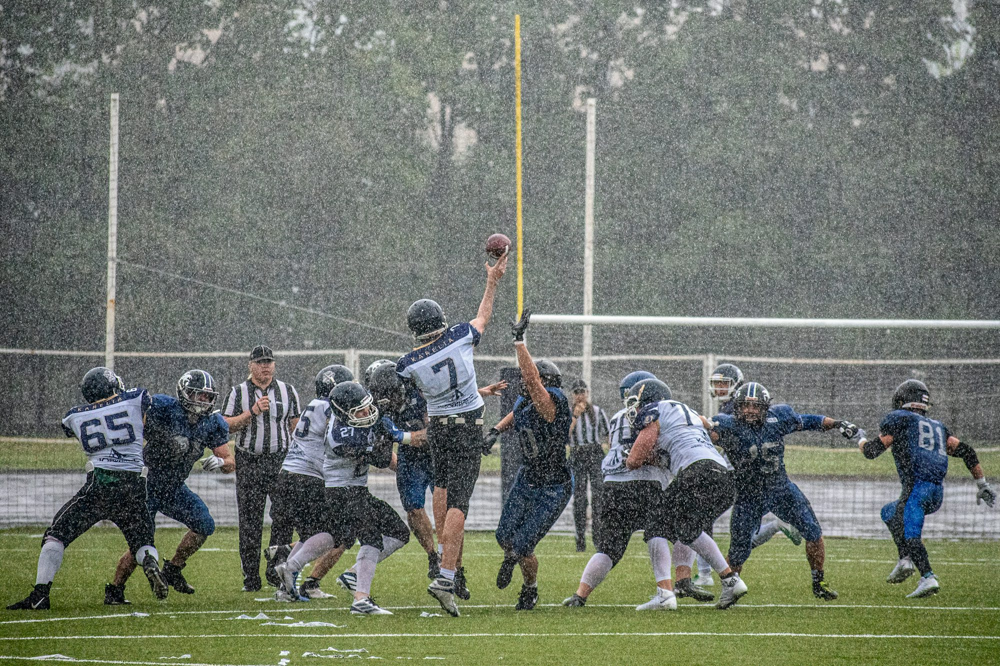

La guía esencial de las reglas del fútbol: comprender el juego
Este artículo ofrece una descripción general completa de las reglas y regulaciones clave que rigen el fútbol, mejorando el conocimiento tanto de los jugadores como de los fanáticos.
El campo de fútbol, donde se desarrolla toda la acción, es un campo rectangular que mide entre 100 y 110 metros de largo y De 64 a 75 metros de ancho para partidos internacionales. El campo está marcado con varias líneas que definen áreas clave, como el área de penalti, el círculo central y los arcos de las esquinas. En cada extremo del campo hay dos porterías, que miden 7,32 metros de ancho y 2,44 metros de alto. Estas dimensiones estandarizadas crean un entorno de juego uniforme, lo que garantiza que las reglas se apliquen de manera consistente.
Cada partido comienza con un saque inicial, un momento esencial en el que un equipo comienza a jugar pasando el balón desde el círculo central. Este saque inicial no sólo marca el tono del juego sino que también determina el posicionamiento estratégico inicial. Después de marcar un gol, el equipo contrario reinicia el juego de la misma manera, contribuyendo al flujo dinámico del juego. Otros reinicios incluyen saques de banda, saques de meta y saques de esquina, cada uno con reglas específicas que rigen su ejecución. Comprender estos reinicios es crucial para que los jugadores mantengan la posesión y controlen el ritmo del juego.
Entre las reglas más debatidas en el fútbol se encuentra la regla del fuera de juego. Un jugador se considera fuera de juego si está más cerca de la línea de meta contraria que el balón y el penúltimo oponente cuando se le juega el balón. Esta regla está diseñada para evitar que los jugadores obtengan una ventaja injusta al permanecer cerca de la portería del oponente. Dominar la regla del fuera de juego es vital para las estrategias de ataque, ya que los jugadores deben cronometrar sus carreras y pases para evitar ser descubiertos en fuera de juego, lo que añade una capa adicional de profundidad táctica al juego.
Las faltas son otro aspecto importante del fútbol. que surge cuando un jugador comete una acción ilegal contra un oponente, como hacer tropezar, sujetar o empujar. Los árbitros tienen la tarea de hacer cumplir las reglas y tienen la discreción de otorgar tiros libres o penales según la gravedad y la ubicación de la falta. Se concederá un tiro libre al equipo contrario en el lugar de la falta, mientras que se concederá un tiro penal si la falta se produce dentro del área penal. Comprender las implicaciones de las faltas es crucial para los jugadores, ya que las infracciones repetidas pueden dar lugar a medidas disciplinarias, incluidas tarjetas amarillas y rojas.
El papel de los árbitros es fundamental para garantizar que el juego se desarrolle según las reglas. Un partido típico cuenta con un árbitro principal, responsable de tomar decisiones sobre faltas, fuera de juego y otras infracciones. Dos árbitros asistentes apoyan al árbitro principal desde la banda, mientras que un cuarto árbitro ayuda con las sustituciones y el cronometraje. La introducción de tecnología, como el árbitro asistente de vídeo (VAR), ha revolucionado el arbitraje, permitiendo la revisión de decisiones polémicas para mejorar la precisión y la equidad. Este avance tecnológico subraya el compromiso de mantener la integridad del juego, garantizando que los árbitros tengan las herramientas necesarias para tomar decisiones informadas.
Las acciones disciplinarias son parte integral de la gestión de la conducta de los jugadores en el campo. Los árbitros utilizan tarjetas amarillas y rojas para regular el comportamiento, y una tarjeta amarilla sirve como advertencia por mala conducta. Si un jugador recibe dos tarjetas amarillas en un solo partido, se le recibirá una tarjeta roja, lo que dará lugar a su expulsión del juego. También se puede emitir una tarjeta roja por faltas graves o conducta violenta, enfatizando la importancia del espíritu deportivo y el respeto entre los jugadores. Este sistema de responsabilidad ayuda a crear una atmósfera competitiva pero justa en el fútbol, animando a los jugadores a cumplir las reglas y jugar con integridad.
Marcar un gol es el objetivo principal en el fútbol, y comprender cómo se marcan los goles es fundamental tanto para jugadores como para aficionados. Se cuenta un gol cuando todo el balón cruza la línea de meta entre los postes y debajo del travesaño, siempre que no se hayan infringido reglas en el proceso. La emoción de presenciar un gol es uno de los aspectos más emocionantes del deporte y, a menudo, determina el resultado de un partido. Reconocer los factores que contribuyen al éxito de un objetivo (como el trabajo en equipo, el tiempo y la habilidad) mejora el aprecio por el juego y los atletas que lo practican.
El juego limpio es una piedra angular del fútbol y enfatiza el respeto por los oponentes. , compañeros de equipo y oficiales. Las Reglas del Juego abogan por el espíritu deportivo y el comportamiento ético, esenciales para preservar la integridad del deporte. Promover el juego limpio contribuye a crear un ambiente positivo para todos los involucrados, reforzando la idea de que la competencia debe realizarse con honor y respeto. Se anima a los jugadores a exhibir espíritu deportivo, no sólo por el bien del juego sino también como reflejo de su carácter.
En conclusión, dominar las reglas y regulaciones del fútbol es esencial para cualquiera que practique este deporte. desde jugadores y entrenadores hasta fanáticos y funcionarios. Estas reglas definen cómo se juega el juego, asegurando que siga siendo justo y divertido para todos. A medida que el fútbol siga creciendo y evolucionando, el cumplimiento de estas directrices seguirá siendo primordial para mantener el espíritu del juego. Ya sea que estés viendo un partido desde las gradas o participando en una liga local, una comprensión más profunda de las reglas mejora la experiencia general, lo que permite una mayor conexión con este preciado deporte.